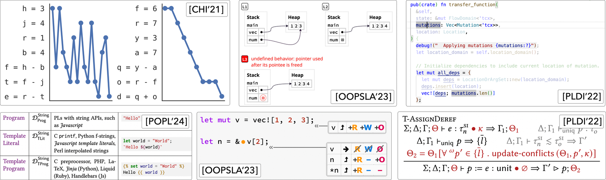

All people should be able to program, and all programmers should be able to build complex software. However, computational literacy today is like textual literacy in antiquity; just as reading was the exclusive skill of the ancient privileged castes, so too is programming the exclusive skill of 1% of today’s population. The number of programmers who can build reliable software systems or analyze massive datasets is vanishingly small. My mission is to empower people to tackle programming problems at all levels of complexity.
My approach is to build systems that amplify the intelligence of programmers, in the sense used by computing pioneers like Bush [1], Engelbart [2], and Licklider [3]. I identify core cognitive tasks that are a challenging part of routine programming, and I design systems to support people in accomplishing those tasks. To both ground my ideas and maximize my impact, I work within programmer communities that apply cutting-edge tools to design complex software, with my current focus being on Rust, a language for safe systems programming. Specifically, I have developed tools to help Rust programmers:
Find relevant code by visualizing dependencies in the IDE [4] (top-right), used by 5,000+ Rust developers.
Learn Rust with novel conceptual models of its key features [5] (center), used by 60,000+ Rust learners.
Learn APIs by linking documentation with examples [6,7], merged into Rust and used by 100+ libraries.
It is difficult to design effective systems for intelligence amplification with intuition alone. People are hard to predict, and programs are hard to analyze. In my research, I seek to build theories as much as systems; to contribute to a shared foundation of knowledge about how programs works (programming language theory) and how people program (cognitive psychology). For example:
I ran four experiments to understand how working memory influences program comprehension [8] (top-left), which motivated my work on visualizing dependencies to overcome working memory limitations.
I formalized my static dependency analysis for Rust (bottom-right) and demonstrated its correctness by proving a key theorem, termination-insensitive non-interference [4].
I designed a formal semantics for document languages to provide a precise theoretical foundation for my ongoing work in designing a successor to LaTeX [9] (bottom-left).
Intelligence amplification requires an understanding of programmer cognition. So my thesis work started with the question: which psychological theories can make concrete predictions about how people perform programming tasks? After reviewing the literature on applied cognitive psychology, I found a common theme: working memory, or the cognitive capacity for processing information in the short-term. The key finding is that working memory has a universally limited capacity of 7-ish “chunks” of information. I asked: how would a programmer’s working memory affect their ability to perform programming tasks?
“The Role of Working Memory in Program Tracing” (CHI 2021,[8])
reports on four experiments examining the limits of human performance in
a straightforward programming task: tracing, or mentally
simulating a program’s behavior. When given a simple program like
“x=8; y=2; z=4” and then asked the value of y
(i.e., a paired-associate cued recall task), we found that most
participants started to make errors after about 7 variables, consistent
with working memory theory. More interestingly, we asked participants to
trace a program with an accumulating dependency structure like
“x=8; y=x+2; z=y-1; …”. We designed an interface to track a
participant’s attention by blurring-out code not under the participant’s
cursor. We found evidence for two distinct tracing strategies: reading
“linearly” top-down and reading “on-demand” in reverse dependency order.
These strategies corresponded to distinct working memory errors:
forgetting the value of a variable, and forgetting the location of a
prior computation. Overall, the experiments showed that a programmer’s
working memory severely limits their ability to mentally maintain
program state, and the nature of that state depends on the programmer’s
chosen strategy.
This result motivated the question: how can tools amplify a programmer’s working memory to overcome these limitations? IDEs provide some support with features like “Jump to Definition”, but they provide no support for following the full dependency structure of a computation. This task has historically been the domain of program slicing — yet despite decades of work, no slicer is in widespread use today. So I focused on developing a new program slicer with two criteria: (1) the analysis is practical enough to run on large codebases, and (2) the interface provides cognitive support for program comprehension tasks.
“Modular Information Flow through Ownership” (PLDI 2022,[4]) describes a practical static slicer for Rust, or more generally for computing information flow in Rust (of which slicing is a special case). The key insight is that both alias analysis and mutation analysis can be made modular by careful use of the Rust type system. Our algorithm can analyze flows through function calls only using ownership annotations on the type signature, without needing the function body itself. To evaluate soundness, we proved that this approximation satisfies termination-insensitive non-interference within a formal model of safe Rust. To evaluate precision, we analyzed ≈ 400, 000 lines of Rust code and found that this approximation is equivalent to a whole-program analysis in 94% of cases, meaning that little precision is lost. The modular information flow algorithm is publicly available as the Flowistry tool (willcrichton/flowistry) .
Flowistry is supporting two ongoing research projects. First, I developed an IDE tool that interactively visualizes Flowistry’s output as program slices, which has been used by over 5,000 Rust developers to date. I am running experiments to study how Flowistry influences a developer’s process of comprehending code. Second, I am working with colleagues at Brown to use Flowistry as the foundation for Paralegal (brownsys/paralegal) , an IFC system that can identify security violations in Rust codebases.
Another key cognitive task for all programmers is learning — a particular problem for Rust, whose combination of concepts from functional and systems programming is notoriously difficult to master. During my postdoc, I set out to systematically improve Rust’s learning curve by developing an experimental platform for teaching Rust at scale. The Rust Book Experiment (rust-book.cs.brown.edu) is a fork of The Rust Programming Language, the Rust community’s official textbook. The key idea is to embed interactive quizzes within the book. Learners benefit because the quizzes help them engage with the material. We benefit by collecting large quantities of data about which parts of Rust are hardest to learn. Over the last year, 60,000+ people have answered quiz questions over 1,000,000 times using our platform.
“A Grounded Conceptual Model for Ownership Types in Rust” (OOPSLA 2023,[5]) describes one part of this experiment focused on ownership. We first ran a formative study with 36 Rust learners who answered open-ended problems about ownership. We found that learners could recognize the surface reason for why a program is rejected (e.g., there are two mutable references to the same data), but they could not articulate the underlying reason (e.g,. with a particular input, the code would have undefined behavior).
We developed a new pedagogy of ownership to address this disconnect. At its heart is a conceptual model of ownership types as flow-sensitive permissions to read, write, or own data. We built a compiler plugin that takes a Rust program and generates a diagram showing how each statement affects permissions. Finally, we wrote a replacement chapter on ownership for the Rust Book that uses these diagrams (link).
We evaluated the permissions pedagogy by comparing the learning outcomes of our new text versus the baseline chapter on ownership in The Rust Programming Language. To measure learning outcomes, we designed and deployed an instrument to evaluate learners’ understanding of ownership. An A/B test of the two texts found that our pedagogy improved average scores on the instrument by +9% (N = 312, p < 0.001, d = 0.56). More broadly, this experiment validated our hypothesis that gathering quiz data at scale would be a useful tool for designing and evaluating language learning interventions.
Below are several research questions that I am interested to work on during my professorship.
The modern document uses teraflops of processing power and millions of pixels to… render stylized text on emulated 8.5” × 11” pieces of paper. Absurd! That made sense at the birth of TeX in 1978, but the future of communication needs better document technologies. I want to study this problem from the cognitive and PL perspectives. First, which aspects of reading comprehension could be better facilitated by changes to the communication medium? For instance, “explorable explanations” are probably less cognitively useful compared to ideas such as: all symbols should be linked back to their definition. All figures should be visible on-screen when a person is reading text about a figure. All text should come with machine-checkable comprehension questions to engage the reader.
But this begs the PL perspective: how should we design a document language to make the necessary cognitive augmentations practical for authors, especially those without significant training in technical communication, educational psychology, and visual design? How can document languages make it easy to correctly compose content and computation? My prototype language Nota (nota-lang/nota) and my document calculus formalism (POPL 2024,[9]) are my first steps in this direction.
Tools like GitHub Copilot have made a splash in the programming community. For programmers, the question is: how should they most effectively incorporate these tools into their workflow? For programming language designers: how should they design language syntax and semantics when knowing that future code is equally likely to be written by a machine as much a person? Psychology provides the useful framework of recognition vs. recall. Programming has long been a recall-oriented activity — programmers commit to memory the syntax and semantics of a language, and write programs by recalling that knowledge. AI shifts towards recognition — programmers ask for a program, and recognize whether the generated code is satisfactory. I want to study the cognition of program recognition: how the features of a program and the aspects of a person’s background would help or hamper them in distinguishing desirable from undesirable programs.
Library developers love to market their software as being “easy to use” or “for humans”. Researchers often claim that their systems are often “more expressive” than prior work. However, the singular metric that often justifies these claims is lines-of-code. Despite the metric’s imperfection, no one has yet come up with an alternative besides “run a large-scale user study” or “deploy the tool in industry and see who adopts it.” Here’s a hypothesis I want to test: the length of the argument for why a program is correct (say, the size of a proof in a proof assistant) has a higher correlation with program comprehension effort than the length of the program itself. If this hypothesis could be experimentally validated, then that would be grounds for developing a new expressiveness metric. A system that lends itself to short proofs across a benchmark of reference tasks could be predicted as more usable (to an expert) than a system requiring longer proofs.